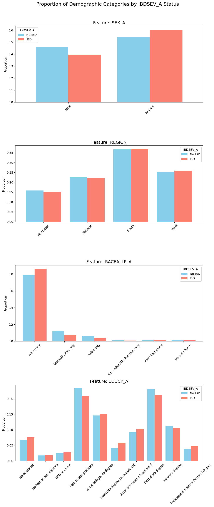
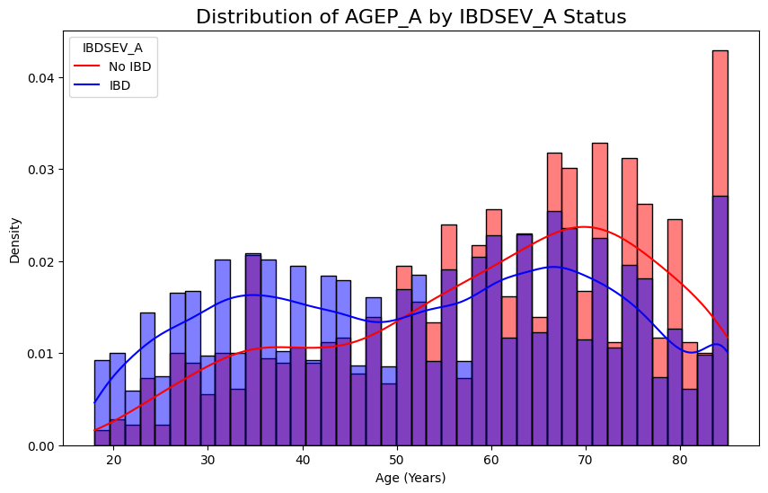
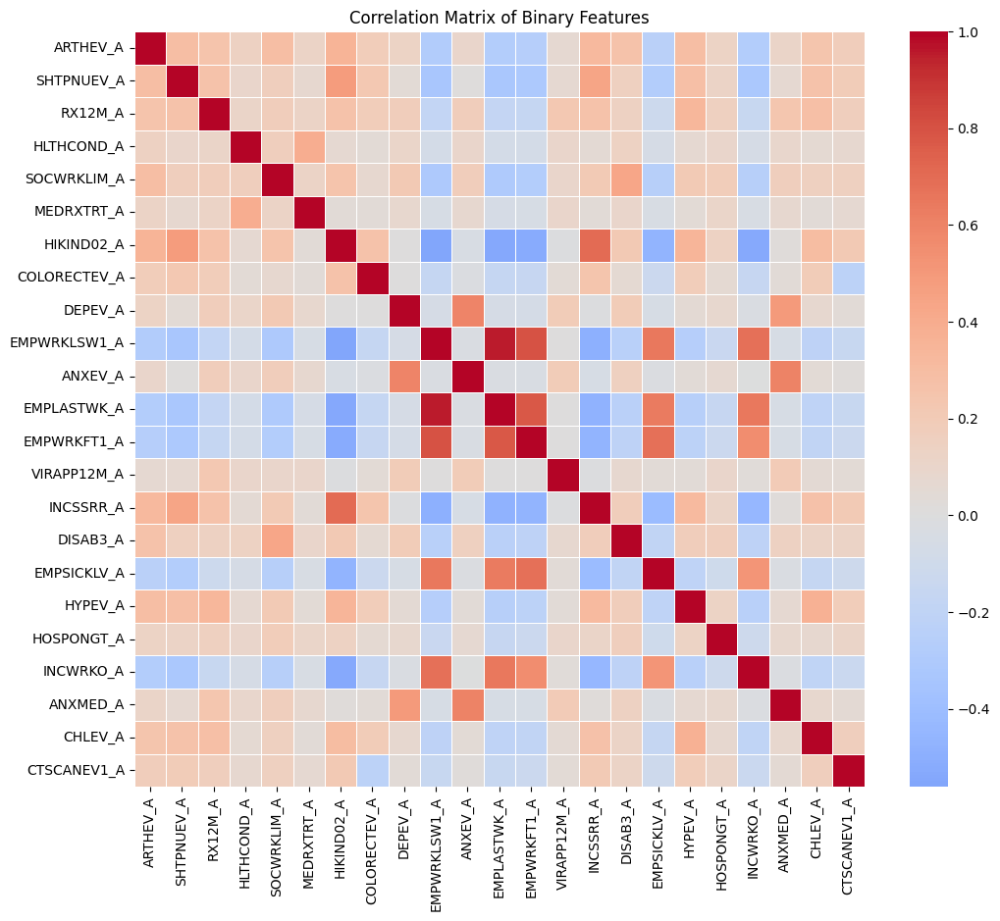
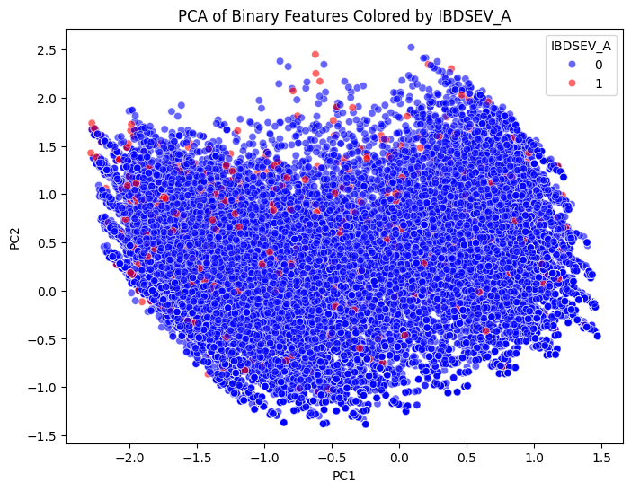
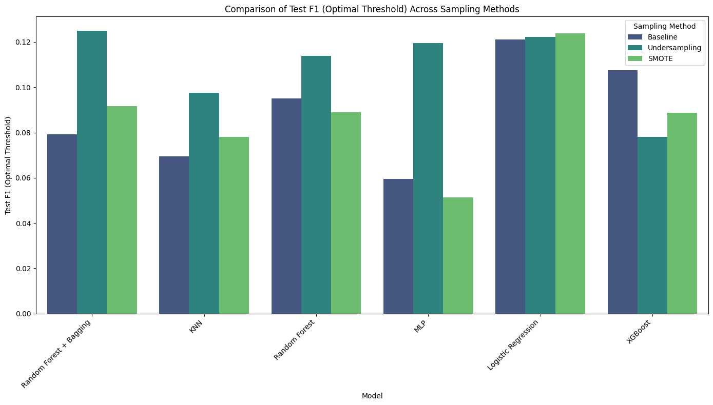
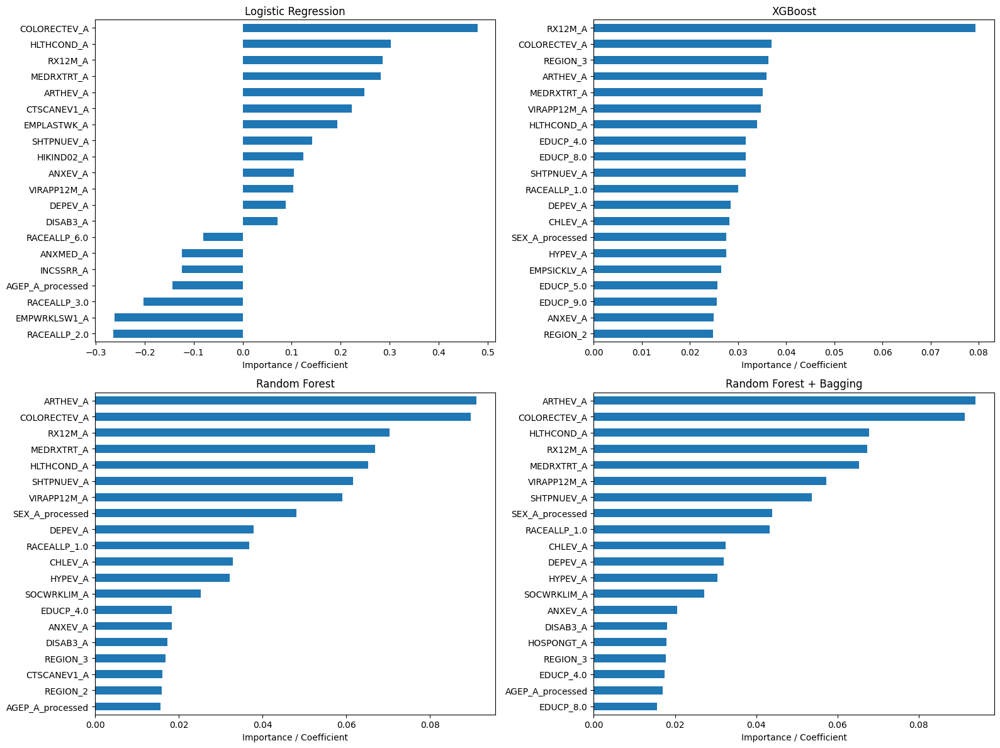

December 3, 2025
This project investigates how far machine learning can go in flagging a rare chronic condition, inflammatory bowel disease, from routine health-survey responses, and what that predictive ceiling reveals about the limits of survey-based screening. Using two years (2023 and 2024) of National Health Interview Survey (NHIS) data, this project treats severe IBD as fundamentally a class-imbalance problem before it is a feature-engineering one: IBD is rare enough in the general population that a model predicting “no IBD” for every respondent would already score deceptively well on plain accuracy.
The first step was descriptive: which survey variables actually differ between respondents who report severe IBD (IBDSEV_A = 1) and those who don’t?


Comparing response rates between the two groups surfaced five variables with the largest gaps: a history of arthritis (ARTHEV_A), having received a pneumococcal vaccine (SHTPNUEV_A), any prescription use in the past 12 months (RX12M_A), a reported health condition (HLTHCOND_A), and social or work limitations (SOCWRKLIM_A). Most of the strongest discriminators cluster around chronic-disease comorbidity and healthcare utilization rather than demographics, which tracks with what’s already known about IBD: it rarely travels alone. Depression (DEPEV_A) and anxiety (ANXEV_A) were both more common among IBD respondents, plausibly reflecting the psychological weight of a chronic, unpredictable gastrointestinal condition, and so were frequent prescription use and overnight hospital stays (HOSPONGT_A), consistent with the ongoing medical management severe IBD requires. Employment-related variables ran the other way: respondents without IBD were slightly more likely to report currently working or receiving wage income, a pattern consistent with chronic illness limiting employment and income activity, though it’s suggestive here rather than something this analysis can pin down causally.

A correlation matrix across the retained binary features showed the same comorbidity story from a different angle. Depression and anxiety were strongly positively correlated with each other, as expected for conditions that frequently co-occur. Reported health condition (HLTHCOND_A) and immune-suppressing prescription use (MEDRXTRT_A) were highly correlated too, consistent with sicker respondents being more likely to be on immunosuppressive treatment. And the employment-related features, ever worked for an employer, worked last week, wage income, clustered tightly with each other, which is unsurprising since they’re really different facets of the same underlying employment status.

Projecting the feature set into two principal components made the modeling challenge visible before a single classifier was trained. Respondents with and without IBD were heavily intermixed across the PCA space, with no region where one class predominated without substantial overlap from the other. That means the strongest linear combinations of these features, the ones that explain the most variance in the data, don’t line up with the boundary that actually separates the two classes. Any classifier drawing a decision boundary in this reduced space would struggle, particularly for the minority IBD-positive class. That’s not surprising for a rare chronic condition inferred from a general-purpose health survey rather than clinical data, but it’s worth confirming directly before trusting downstream model results.
Because severe IBD cases are rare, a model that predicts “no IBD” for everyone would score misleadingly well on accuracy while catching zero real cases. Eight classifiers, two dummy baselines, logistic regression, KNN, an MLP, random forest, random forest with bagging, and XGBoost, were each evaluated under three resampling regimes: no resampling (class weighting only), random undersampling, and SMOTE oversampling. Evaluation used 5-fold TimeSeriesSplit cross-validation to preserve the chronological order between the 2023 and 2024 survey years, with all preprocessing done inside pipelines to avoid leakage, and F1 score, rather than accuracy, as the primary metric.

DataFrame of Test F1 Scores Across Sampling Methods (including Dummies, rounded to 3 decimal places):| Sampling Method | Baseline | SMOTE | Undersampling |
|---|---|---|---|
| Model | |||
| Random Forest + Bagging | 0.079 | 0.092 | 0.125 |
| Logistic Regression | 0.121 | 0.124 | 0.122 |
| MLP | 0.059 | 0.051 | 0.119 |
| Random Forest | 0.095 | 0.089 | 0.114 |
| KNN | 0.069 | 0.078 | 0.098 |
| XGBoost | 0.108 | 0.089 | 0.078 |
| Dummy (Majority) | 0.033 | 0.033 | 0.033 |
| Dummy (Stratified) | 0.049 | 0.026 | 0.026 |
The results bear out the accuracy warning directly: both dummy baselines scored an F1 of 0.033 to 0.049, better than zero only because of how F1 is computed, and every real model beat them, but not by a wide margin. Logistic regression was the most stable performer across all three regimes (F1 of 0.121 baseline, 0.124 with SMOTE, 0.122 with undersampling) and the best model overall in two of the three. Undersampling helped the weaker models the most: random forest with bagging nearly doubled its F1 (0.079 to 0.125), and the MLP roughly doubled (0.059 to 0.119). XGBoost showed the opposite pattern, it was competitive at baseline (0.108) but degraded under both undersampling (0.078) and SMOTE (0.089), suggesting it was already extracting what signal existed from the untouched class distribution and that resampling mostly added noise. No single model or resampling strategy solved the underlying problem; F1 scores stayed in the 0.05-to-0.13 range across the board, a ceiling set by how little separates the two classes in feature space, not by which algorithm was used.

Feature importances from the fitted models lined up with the earlier discriminator analysis: arthritis history, frequent prescription use, and the mental-health comorbidities (depression and anxiety) were consistently ranked among the strongest predictors across models. That consistency is the most clinically meaningful result of the analysis: even where predictive performance was modest, the models converged on the same real, clinically sensible signal that IBD overlaps heavily with other chronic conditions rather than presenting in isolation.
No model or resampling strategy fully solved the class-imbalance problem here. IBD-positive respondents didn’t separate cleanly in feature space, PCA showed heavy overlap between classes, and F1 scores across every approach tested stayed modest. But the exercise surfaced a real signal: arthritis, frequent prescription use, and mental-health comorbidities were consistently the strongest predictors, consistent with IBD’s well-documented pattern of overlapping chronic conditions. The larger lesson was methodological rather than algorithmic: for rare-disease prediction from survey data, feature selection, evaluation-metric choice, and honest accounting for class imbalance matter more than which classifier gets used.
NHIS is self-reported survey data, not clinical diagnosis, so the target variable reflects what respondents reported rather than a confirmed medical record, and the severity threshold (severe ulcerative colitis or Crohn’s specifically) excludes mild and moderate IBD cases entirely. The two-year window (2023-2024) is also short for a chronic, low-prevalence condition, and the demographic features (race, region, education) necessarily collapse real heterogeneity into broad categories. None of this invalidates the comorbidity signal the models converged on, but it does mean the resulting F1 scores describe a ceiling for this data and this approach, not a ceiling for IBD prediction generally.
Course: SI 670, University of Michigan.